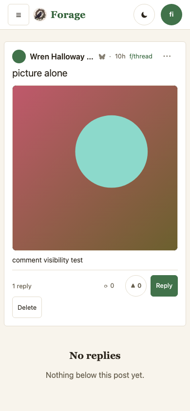
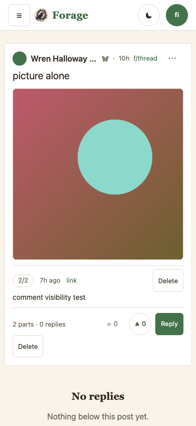
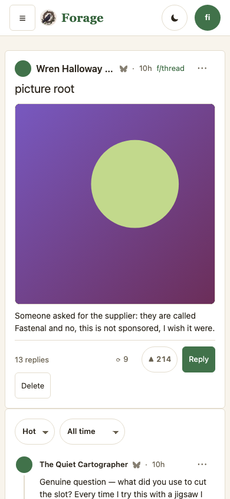
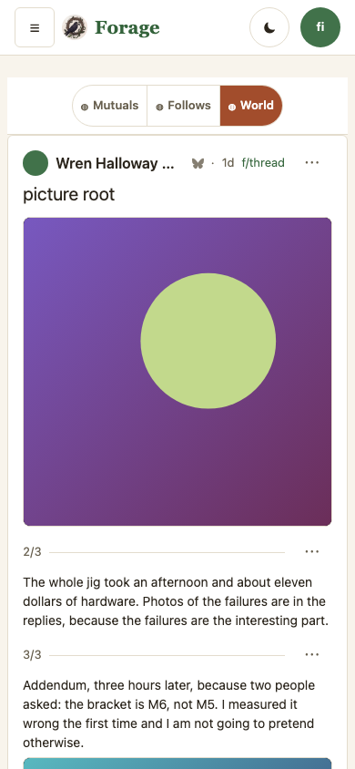
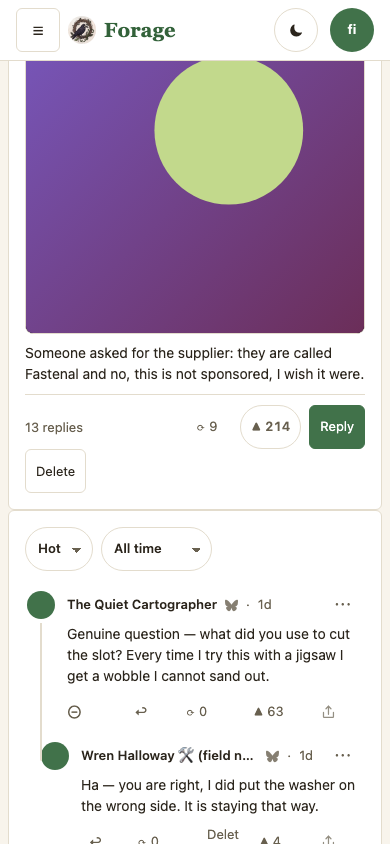
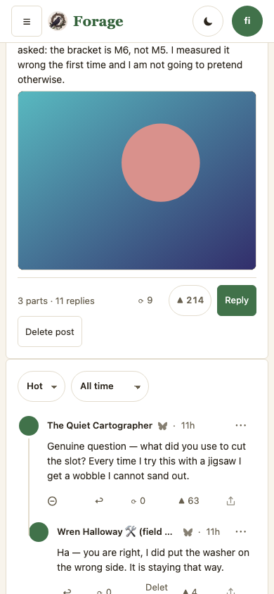
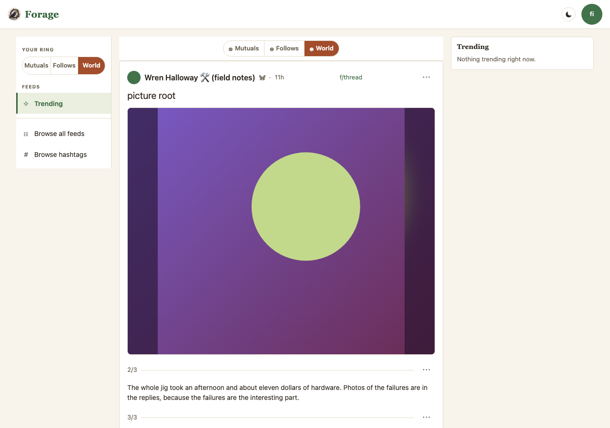

One proposal, and every decision now answered, from the owner’s report on 2026-09-03 with four screenshots: “if I write a comment I don’t see it right away … in some cases it’s actually showing up as part of the original post? but still says 1 reply? it’s confusing and wrong” — and, a message later, “deleting that ‘comment’ did in fact delete the post”.
All three symptoms are one rule. Forage treats a top-level reply by the author
as more of the post — the 1/3, 2/3, 3/3 shape — hoists its words into the post body and
takes it out of the comment list. That rule is right, and the research below is why: it is
the network’s own rule, and Bluesky shipped the matching 2/3 badge to every user
on 2026-09-02. What was wrong is that a hoisted part arrived as anonymous body text
— no number, no time, no permalink, and nothing that could delete itself, so the only Delete
on the card was the post’s.
v2 — the owner decided, on the v1 frames: “for parts 1, 2, 3 posts
I want to display them as ONE POST where 1/3 is the post and when you open it they are all there
as one narrative.” So the chain stays in the post’s head and proposal B
(the parts pinned above the comments, the way Bluesky draws them) is off. Its frames are
gone from this page with it; it is recoverable from the tag mock/self-thread-v1
(5f65749), where it was built and captured.
The decision moved a second thing with it. A strip carrying a number, a time, a link
and a Delete button is three interruptions in a narrative that was just asked to read as
continuous — so the seam went quiet: a hairline, the number, and a
… menu holding when the part landed, its link, and its own delete. It cannot
be nothing, which is what it was: a part with no mark at all is exactly what made a reply
read as the post’s own words and put the wrong Delete under the owner’s thumb.
v5: both columns re-captured again — main has moved three times under
this branch (8bc6cbd → 0d5e744 → b2c9c41 →
7e82458), and a
Current column that names a tree the owner has stopped running is the one thing rule 2 exists
to prevent. The ring pill above the head card in every frame is those landings, not this branch. Proposal B’s frames were captured at 5f65749, kept reachable as the
tag mock/self-thread-v1 because the rebase rewrote that sha off the branch.
Frames: 390×844 and 1280×900, default skin (warm),
signed in as the poster — the delete hazard only exists for the person who can see a
Delete button. Population: e2e/harness/mock-selfthread.mjs.
Claims held by e2e/self-thread.workflow.mjs.
| # | Decision | Options, and where it stands |
|---|---|---|
| 1 | Does a self-reply mean “more of the post”? | Settled by measurement — yes, keep it. 1,641 real self-replies from 246
authors, sampled through the appview on 2026-09-03. A clock cannot separate the two
readings: Bluesky’s own appview returns opThread: true for self-replies
1.3h and 2.4h after their parent, numbering them 2/2 and 3/3, and only
3.7% of chains write “1/3” in their words. Raise it if you disagree;
nothing below depends on re-opening it. |
| 2 | Where the chain is drawn | CLOSED on A (owner, 2026-09-03, v2): “display them as ONE POST where 1/3 is
the post and when you open it they are all there as one narrative.” The chain is the
post’s body. B is off and its frames are off this page; it lives at
5f65749 if it is ever wanted. |
| 2b | How loud the seam between parts is | CLOSED on quiet (owner, v2). A hairline, 2/3, and a
… menu carrying the part’s time, its link and its own delete.
The louder alternative — all four on a visible strip — is at
5f65749. The floor is that the seam is never nothing. |
| 3 | What the head’s count says | Proposed on both: 3 parts · 11 replies, and the number is the
list by construction. It was the appview’s replyCount, which counts a
hoisted part and cannot count a re-rooted one — that is where “1 reply”
over “No replies” came from. Alternative: drop the parts number and say
“11 replies” alone. |
| 4 | Delete | Proposed on both: every part carries its own Delete, and the post’s button says “Delete post”. Two buttons reading “Delete” on one card is the ambiguity that cost you the post. Open only in the wording. |
| 5 | An escape hatch — “post this as a separate comment” | Not built. Any marker forage writes is invisible to every other client, and 76% of the chains forage renders are written elsewhere — it would work on the minority and change nothing on the majority. And once a part is numbered, timed and independently deletable, there is nothing left to opt out of: the confusion was the anonymity, not the classification. Reopen it any time; nothing here forecloses it. |
| 6 | A self-QUOTE — reposting your own post with a comment | CLOSED (owner, 2026-09-03): “if a user reposts their own post with comments
it’s now a repost style comment to be clear, not part of the post head.”
Already true — the hoist only ever walks replies — and now pinned
by a test, because it is a rule rather than an accident. A quote is the author talking
about the post at a new moment, to a new audience; a reply continues it. |
Your own case, rebuilt: a post with no words and no alt text, so the only sentence on the card is the one the hoist put there. This is the tree where the contradiction is audible — under eleven replies a wrong count hides in the crowd; here it is the whole card.


2/2 above the part, its time, link and
Delete part 2 in the seam’s menu, 2 parts · 0 replies on the
head, and Delete post below it. The empty state is still honest — nobody has
answered — it just no longer contradicts a number four lines above it.A three-part post (the root is 1/3) under the measured load: eleven replies, one part posted in the same batch as the root, one posted 3h17m later carrying a picture of its own, and a decoy — a later self-reply the appview ranks first.




getPostThread ranks its
replies; it does not return them oldest-first. A two-part post could render back to front.
The network states the rule and the branch follows it: “the oldest contiguous line of
OP replies from a thread root”, with the rkey breaking ties, because 43% of
real chains tie on createdAt — a composer posts a chain in one batch.… menu carries the rest: when it landed, its link, and
Delete part 2 — named for the part, because the post has a Delete of its own four
lines below and the two were indistinguishable once already.
app.bsky.feed.post carries text, facets,
reply (root and parent, no kind and no ordinal), embed,
langs, labels, tags, createdAt. Explicit
threading was proposed in atproto discussion #2321 — “x/73” markers and
next-post pointers — and declined in favour of deriving it. Nothing in
community.lexicon.* covers post series, and no other client mints one; the
long-form clients (Whitewind, Leaflet) mint a bigger record type instead.app.bsky.unspecced.defs#threadItemPost: opThread —
“part of a contiguous thread by the OP from the thread root” — plus
opThreadPostIndex and opThreadPostCount. That is the
2/3 badge, and the rule behind it is the one forage already had.2/3 badges in the Bluesky app this week.opThread: true, numbering them 2/2 and 3/3. A time gate would put forage out of
step with the network on real threads.Sampled from the public discover feed through
public.api.bsky.app on 2026-09-03: 1,641 self-replies across 246 authors, 958 of them
top-level replies to the author’s own root — the case forage hoists. Sources read:
bluesky-social/atproto (op-thread.ts, threads-v2.ts,
unspecced/defs.json, feed/post.json) and
bluesky-social/social-app (feed-manip.ts,
ThreadItemPostNumber.tsx, usePostThread/).
| Claim | Where it lives | Held by |
|---|---|---|
| The oldest self-reply continues the post | js/substrates/lens.js — oldestSelf() |
test/lens.test.js “the chain follows the OLDEST self-reply”; e2e/self-thread.workflow.mjs (the decoy stays a comment) |
| A part is numbered 2/3, the root being 1/3 | js/substrates/lens.js — parts, part |
test/lens.test.js; both workflow blocks read the badges off the DOM |
| A part carries its author, cid and time | js/substrates/lens.js — selfThread.push |
test/lens.test.js “carries what a control needs” |
| The count is the list | js/substrates/lens.js — replyCount; js/ui/lens-views.js head |
test/lens.test.js ×2; e2e/self-thread.workflow.mjs (3 parts · 11 replies, and the reported tree) |
| Every part can delete itself; the post’s button says post | js/ui/lens-views.js — partSeam, partMenuGroups, deleteControl({ label }) |
e2e/self-thread.workflow.mjs (both placements) |
| A part goes through the shaper, so policy reaches it | js/substrates/lens.js — shapeLensPost in the walk |
test/lens.test.js ×3 (withheld, one muted word takes one part, a bystander’s reply survives) |
| A self-quote is a quote, never a part | js/substrates/lens.js — the walk reads replies only |
test/lens.test.js “the author QUOTING their own post” |
js/self-thread-view.js existed so both placements
could be captured from the engine rather than drawn; with decision 2 closed it is deleted,
along with partNodes, which B was the only consumer of.1/3 and 3/3 and
the gap stays visible. Renumbering the survivors would hide the mute from the reader who asked
for it. (Shape agreed with claude/ring-scope, which fixed the same leak on its
own branch at c5281f8.)TODO.md.| v | Date | Commit | What changed on this page |
|---|---|---|---|
| 5 | 2026-09-04 | f05f128 |
Rebased onto 7e82458 (the Web Share Target, #59) and both
columns re-captured. That branch depends on this one: its own notes quote the owner
asking to share “the 1/2/3 thing” and read it “as one plain post”,
which is the hoist this page is about — so a shared post is now a common way to
arrive at a surface that, on main, still renders a self-reply as anonymous body text over a
Delete that takes the post. Export lists still identical to main’s. |
| 4 | 2026-09-04 | 502fbcc |
Rebased onto b2c9c41 (ring boards retired, #58) and both
columns re-captured for the second time in two days. Nothing on this branch changed:
the export lists of lens-views.js, lens.js and
rings.js are identical to main’s, which is the mechanical version of
“this branch only touches the hoist”. One thing a reader comparing v3 and v4
frames should know: the population uses fixed dates, so the same capture shows a later
relative time each day it is re-taken (“10h” in v3, “1d” here).
That is the clock moving, not the surface. TODO.md. |
| 3 | 2026-09-03 | 20ce128 |
Rebased onto main after claude/ring-scope landed and deployed
(0d5e744, forage-v74 live). Both columns re-captured — Current
named a tree the owner had stopped running, which is the one thing rule 2 exists to
prevent. The ring pill visible above the head card in every frame is that landing. The two
branches had fixed the same policy leak from different directions, so the merge chose an
order rather than a side: numbering before withholding, keeping the gap where a muted part
was. Proposal B’s sha is now the tag mock/self-thread-v1, pushed so
it stays resolvable after the rebase. |
| 2 | 2026-09-03 | 20a871f |
Decision 2 closed on A (“ONE POST … one narrative”) —
B is off the branch and off this page, recoverable at 5f65749. Decision 2b
added and closed with it: the seam goes quiet, its controls moving into the
part’s … menu. Decision 6 recorded (a self-quote is a quote,
not a part) and pinned by a test. Decision 5 closed as not built. The withholding rule
changed shape after claude/ring-scope landed its own fix for the leak this
branch reported: a hidden part is withheld and the walk continues, rather than the chain
stopping. Proposed column re-captured at 20a871f. |
| 1 | 2026-09-03 | 5f65749 |
First. Two proposals, five decisions (one settled by measurement), three captured
columns (main 8bc6cbd, and both placements at 5f65749) over a new
population, e2e/harness/mock-selfthread.mjs, measured off 1,641 real
self-replies. The frames caught a second bug on their own: main hoists a decoy self-reply
the appview merely ranked first. |